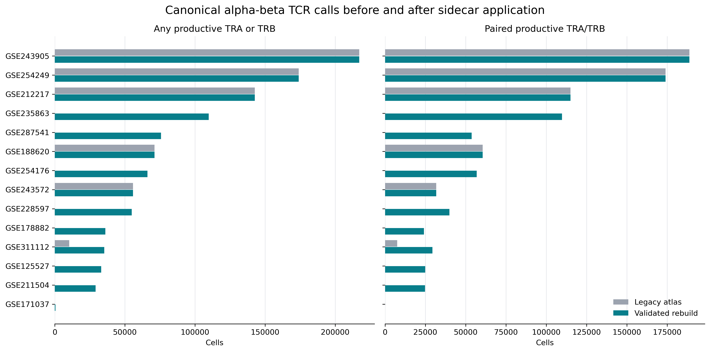
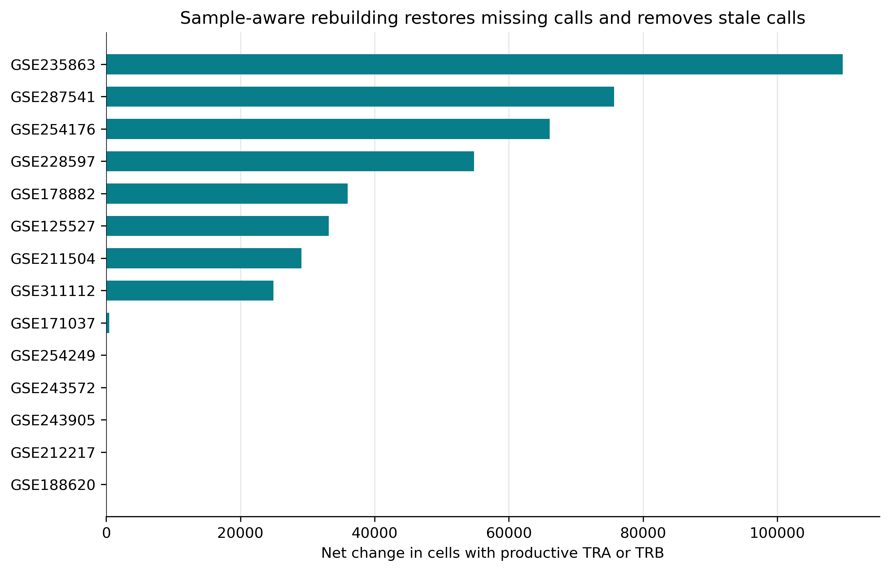
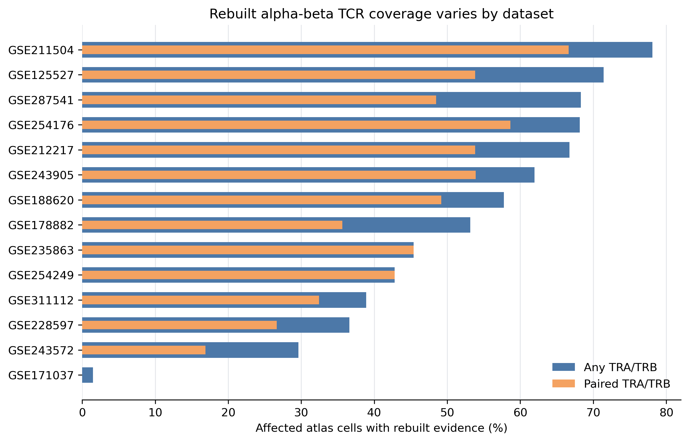

Full-atlas TCR metadata correction
Decision summary
.partial only after exact sidecar, unaffected-value, matrix, embedding, and backed-read validation.Candidate: /ssd/tnk_phase3/Integrated_dataset/full_atlas/tcr_corrected/integrated_full_atlas.h5ad
SHA-256: d32c9d2bdb955b12e1eafbed8322f8cb965cf3a225191e612b53f3d3783480d5
The canonical symlink was not changed. The metadata-corrected input and original canonical atlas remain rollback points.
What changed
For 14 repaired sources, atlas source_gse_id + original_cell_id was joined one-to-one to sidecar source_gse_id + source_obs_name. Forty-six canonical chain and logical fields were replaced, including empty values that remove stale calls. Twenty-seven provenance fields record coverage, eligibility, join status, UMI/read availability, productive-contig multiplicity, source file, and selected contig.
Before and after

Where calls changed

Dataset coverage

Source-level audit
| Source | Atlas cells | Old any AB | Rebuilt any AB | Old paired | Rebuilt paired | Old-only | Rebuilt-only | Ineligible |
|---|---|---|---|---|---|---|---|---|
| GSE125527 | 46,396 | 0 | 33,141 | 0 | 24,976 | 0 | 33,141 | 0 |
| GSE171037 | 31,937 | 0 | 472 | 0 | 0 | 0 | 472 | 0 |
| GSE178882 | 67,755 | 0 | 36,002 | 0 | 24,148 | 0 | 36,002 | 0 |
| GSE188620 | 123,218 | 71,160 | 71,160 | 60,599 | 60,599 | 0 | 0 | 0 |
| GSE211504 | 37,244 | 0 | 29,086 | 0 | 24,811 | 0 | 29,086 | 0 |
| GSE212217 | 213,706 | 142,604 | 142,604 | 115,048 | 115,048 | 0 | 0 | 0 |
| GSE228597 | 149,812 | 0 | 54,819 | 0 | 39,925 | 0 | 54,819 | 0 |
| GSE235863 | 241,766 | 0 | 109,741 | 0 | 109,741 | 0 | 109,741 | 109 |
| GSE243572 | 188,217 | 55,770 | 55,770 | 31,767 | 31,767 | 0 | 0 | 0 |
| GSE243905 | 350,438 | 217,164 | 217,164 | 188,863 | 188,863 | 0 | 0 | 0 |
| GSE254176 | 96,953 | 0 | 66,062 | 0 | 56,849 | 0 | 66,062 | 0 |
| GSE254249 | 406,494 | 174,010 | 174,010 | 174,010 | 174,010 | 0 | 0 | 0 |
| GSE287541 | 110,874 | 0 | 75,707 | 0 | 53,761 | 0 | 75,707 | 0 |
| GSE311112 | 90,599 | 10,333 | 35,243 | 7,590 | 29,392 | 681 | 25,591 | 0 |
Affected-source totals: 1,100,981 rebuilt productive-alpha-beta cells and 933,890 rebuilt paired TRA/TRB cells.
Validation matrix
| Check | Status |
|---|---|
| affected tcr values exact | PASS |
| anndata backed open | PASS |
| canonical flag consistency affected | PASS |
| canonical symlink unchanged | PASS |
| ineligible atlas rows exact | PASS |
| ineligible rows fail closed | PASS |
| metadata source state and sha unchanged | PASS |
| only expected provenance columns added | PASS |
| protected structure sampled identity | PASS |
| scvi shape | PASS |
| sidecar coverage exact | PASS |
| umap shape | PASS |
| unaffected tcr values exact | PASS |
| whole any ab total | PASS |
| whole paired ab total | PASS |
| x nnz | PASS |
| x shape | PASS |
Interpretation and next boundary
This transaction repairs receptor metadata; it does not retrain gdTAI, change expression scores, alter cell membership, or rerun scVI, UMAP, or Leiden. Previous NK-boundary and TCR-ground-truth summaries are now stale because they consumed legacy receptor fields.
Next: regenerate TCR-derived truth/control labels and boundary/NK audits from this checksum-bound candidate. Canonical publication remains a separate supervised decision after those reports are reviewed.